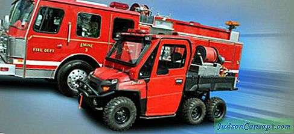

Видове Автомобили
Основни пожарни коли: видове, характеристики
Пожарни танкери
Пожарните танкери са много чести.
Те се използват не само за предаване на пожарогасителни агенти до местоназначението им, но и за транспортиране на бойни екипажи.

Пожарна кола
Автомобилът за първа помощ, който също е бърз отговор, се откроява сред другите противопожарни средства.
Това се дължи на висока мобилност и малък размер. Пожарните танкери са много чести.

Летищните автомобили
В случай на пожар на летящо оборудване, като хеликоптери и самолети,
пожарната машина пристига на повикване, която често се намира в близост до летище.

Пожарни коли за нефтохимическата промишленост
Машини от тип пяна, прах и газ-вода се използват активно за борба
с пожарите с различна тежест в нефтохимическата индустрия.
В горското стопанство съоръженията в газовата промишленост често използват комбинирано гасене.